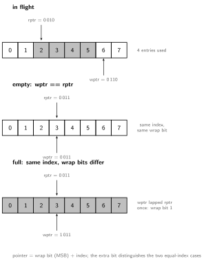

# RTL Design Guide
Describing hardware at the register-transfer level in SystemVerilog. RTL is a description, not a program: the same syntax becomes different gates depending on coding discipline, so always picture the circuit. The building blocks themselves live in [[Combinational Circuits]] and [[Sequential Circuits]]; this note is about writing them so that simulation, synthesis, and the engineer all agree on what the design means.
A module is the unit of hardware. logic is the default
data type. Connect ports by name when instantiating, never by
position.
module and2 (
input logic a,
input logic b,
output logic y
);
assign y = a & b;
endmodule
and2 u_and (.a(x), .b(z), .y(w)); // instantiationOverride parameters and connect ports compactly at instantiation:
adder #(.W(16)) u_add (.a, .b, .sum, .cout); // .a is shorthand for .a(a)
fifo #(.W(8), .DEPTH(32)) u_fifo (.*); // .* auto-connects same-named nets#(.W(16)) redefines a parameter for this instance only.
.name shorthand connects a port to the same-named signal,
and .* connects all remaining same-named nets
automatically. Prefer explicit .name on module boundaries
where the connection list should stay visible; both beat positional
connection, which silently misroutes the moment a port is added.
logic: a 4-state bit (0,
1, x unknown, z high-impedance).
Use it for almost everything; it replaces the legacy
wire/reg split.logic [7:0] data; is an 8-bit
bus, data[3:0] a slice, {a, b} concatenation,
{4{a}} replication.<width>'<base><value>, for example
8'hA5, 4'b1010, 12'd42. Always
size literals.#(parameter int W = 8).Naming a type once keeps wide buses and records consistent and
self-documenting. typedef builds a named type,
struct/union group related fields, and
enum names a small set of legal values (used for FSM state
in [[Sequential Circuits]]).
typedef logic [31:0] word_t; // named alias
typedef struct packed { // packed = one contiguous bit vector
logic valid;
logic [3:0] id;
logic [26:0] payload;
} pkt_t; // 32 bits, synthesizes as a bus
pkt_t p;
assign p.valid = 1'b1; // field access
word_t raw = p; // a packed struct casts to its bit vectorlogic [7:0][3:0], dimensions before the name), the
synthesizable choice for buses. An unpacked array puts
dimensions after the name (logic [7:0] mem [0:255]) and
models memory or register arrays. Only packed types cast freely to and
from a flat vector.logic and
integer are 4-state (0 1 x z);
bit and int are 2-state (0 1
only). Use 4-state logic for RTL so an uninitialized signal
shows as x instead of a silently legal 0.
2-state types belong in testbenches and non-synthesizable models.typedefs,
parameters, and functions so every module agrees on one definition:
package types_pkg; typedef ...; endpackage, then
import types_pkg::*;. One source of truth for a bus width
beats copy-pasted parameters.Drive combinational outputs with continuous assign or
always_comb (blocking =). Operator
families:
| Family | Operators | Effect |
|---|---|---|
| Bitwise | & | ^ ~ |
per bit on a vector |
| Logical | && || ! |
1-bit truth value |
| Reduction | &a |a ^a |
fold a vector to one bit |
| Arithmetic / compare | + - * < == != |
infer adders, comparators |
Every output must be assigned on every path of an
always_comb block, or the tool infers an unintended
transparent latch. Assign a default first or provide a
default: arm:
always_comb begin
y = 4'b0000; // default prevents a latch
if (en) y[a] = 1'b1; // one-hot decoder
endalways_comb also kills the legacy incomplete
sensitivity list bug. An old-style
always @(a or b) that forgets an input (say c)
simulates as if c were frozen, but synthesis reads every
signal the logic uses, so the netlist reacts to c and the
two disagree. always_comb derives the sensitivity list
automatically from the block’s reads, so it cannot happen: never
hand-write a combinational sensitivity list.
Replicate structure with generate:
genvar i;
generate for (i = 0; i < N; i++) begin : g
full_adder u (.a(a[i]), .b(b[i]), .cin(c[i]), .s(s[i]), .cout(c[i+1]));
end endgenerateModel edge-triggered state with always_ff and the
nonblocking assignment (<=):
always_ff @(posedge clk) begin
if (rst) q <= '0; // synchronous, active-high reset
else if (en) q <= d; // load only when enabled
endFor an asynchronous reset, add it to the sensitivity list:
@(posedge clk or negedge rst_n); the reset-release hazards
this creates are covered in [[Synthesis, Timing and Power]].
The rules that keep synthesized hardware matching simulation:
| Rule | Why |
|---|---|
always_comb uses blocking = |
matches combinational evaluation order |
always_ff uses nonblocking <= |
all flops update together on the edge, modelling real registers |
| One signal driven from one block | multiple drivers create races and x |
Full case or a default |
a missing arm infers a latch |
unique/priority on case |
states intent, lets tools warn on overlap or gaps |
| Name signals by pipeline stage | a stale-operand bug is visible in the name (a_r[2] vs
a_r[3]) |
Mixing blocking and nonblocking across the two block types is the root of most simulation versus synthesis mismatches.
Each standard block, with its structure and coding pattern, lives in its home note:
| Block | Where |
|---|---|
| mux, decoder, encoder, adders, shifters, ALU | [[Combinational Circuits]] |
| flip-flops, registers, shift registers, counters, LFSR | [[Sequential Circuits]] |
| FSMs (three-block style, Mealy/Moore, encodings) | [[Sequential Circuits]] |
| register file, RAM | [[Sequential Circuits]] |
| pipelining a datapath (worked example) | [[Synthesis, Timing and Power]] |
One full module showing the discipline end to end, with pointers, flags, and the wrap-bit idiom:
module fifo #(parameter W = 8, DEPTH = 16, A = 4) (
input logic clk, rst, wr, rd,
input logic [W-1:0] wdata,
output logic [W-1:0] rdata,
output logic full, empty
);
logic [W-1:0] mem [0:DEPTH-1];
logic [A:0] wptr, rptr; // extra MSB is the wrap bit
assign empty = (wptr == rptr);
assign full = (wptr[A-1:0] == rptr[A-1:0]) && (wptr[A] != rptr[A]);
assign rdata = mem[rptr[A-1:0]];
always_ff @(posedge clk) begin
if (rst) begin wptr <= '0; rptr <= '0; end
else begin
if (wr && !full) begin mem[wptr[A-1:0]] <= wdata; wptr <= wptr + 1'b1; end
if (rd && !empty) rptr <= rptr + 1'b1;
end
end
endmodule
Testbenches are not synthesized, so the full behavioral language
applies: initial, #delay,
$display, assert.
module tb;
logic clk = 0, rst = 1, in, det;
always #5 clk = ~clk; // 100 MHz clock
detector dut (.clk, .rst, .in, .det);
initial begin
@(negedge clk) rst = 0;
foreach (stream[i]) begin
in = stream[i];
@(posedge clk);
assert (det === expected[i]) else $error("mismatch at %0d", i);
end
$finish;
end
endmodule| Synthesizable | Simulation-only |
|---|---|
always_ff, always_comb,
assign |
initial, final, #delay |
case, if,
for/generate |
$display, $finish,
assert |
sized literals, enum, parameters |
->, <->, real numbers |
A related trap: #delay inside RTL is not an error, it is
silently ignored by synthesis, so a design “verified” with
delays in its always blocks simulates one circuit and builds another.
Delays belong in testbenches only. The x-aware operators
===/!== are testbench-only for the same
reason: hardware has no x.
The classic synthesis pragmas // synthesis full_case and
// synthesis parallel_case are what Cummings’ SNUG paper
named the evil twins: they are promises made to the
synthesis tool that the simulator never hears. full_case
says “unlisted case values cannot occur,” letting synthesis drop the
latch or default; parallel_case says “no two items
overlap,” letting synthesis drop the priority logic. When the promise is
false, simulation (which still executes the literal case
semantics) and the netlist disagree, and the bug ships. The directives
are most dangerous precisely when they appear to work.
SystemVerilog replaced them with unique case and
priority case: the same optimization intent, but stated
in the language, so simulation actively checks the claim and
fires a runtime violation report when it is broken. The tools stay
honest with each other:
unique case (state) // claim: exactly one match, no overlap
S0: ...
S1: ...
endcase // sim reports a violation if the claim is falseFor wildcard matching, use casez with ? in
the case items for don’t-care bits, and avoid casex
entirely: casex also treats x as a wildcard, so an
uninitialized input matches everything in simulation and the failure is
invisible exactly when things are most broken.
One driver, one block, one style
The remaining Cummings rules worth engraving: never mix blocking and nonblocking assignments in one always block; never assign one signal from two blocks; latches (when truly intended) get nonblocking assignments like flops; and reset every flop you infer, because simulation starts at x but silicon starts at random.
Author: Sai Govardhan (saigov14@gmail.com)
Textbooks
Standards, Papers, and Wikipedia
Microarchitecture References
MIT License
Copyright (c) 2025 Sai Govardhan (saigov14@gmail.com)
Permission is hereby granted, free of charge, to any person obtaining a copy
of this software and associated documentation files (the "Software"), to deal
in the Software without restriction, including without limitation the rights
to use, copy, modify, merge, publish, distribute, sublicense, and/or sell
copies of the Software, and to permit persons to whom the Software is
furnished to do so, subject to the following conditions:
The above copyright notice and this permission notice shall be included in all
copies or substantial portions of the Software.
THE SOFTWARE IS PROVIDED "AS IS", WITHOUT WARRANTY OF ANY KIND, EXPRESS OR
IMPLIED, INCLUDING BUT NOT LIMITED TO THE WARRANTIES OF MERCHANTABILITY,
FITNESS FOR A PARTICULAR PURPOSE AND NONINFRINGEMENT. IN NO EVENT SHALL THE
AUTHORS OR COPYRIGHT HOLDERS BE LIABLE FOR ANY CLAIM, DAMAGES OR OTHER
LIABILITY, WHETHER IN AN ACTION OF CONTRACT, TORT OR OTHERWISE, ARISING FROM,
OUT OF OR IN CONNECTION WITH THE SOFTWARE OR THE USE OR OTHER DEALINGS IN THE
SOFTWARE.